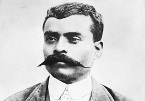

Ayakta ölmek, dizlerinin üzerinde yaşamaktan daha iyidir.
— Emiliano Zapata
Uzun siyah bıyıkları, geniş şapkası ve keskin bakışlarıyla asi lider Emiliano Zapata (1879–1919) Meksika’nın en bilinen yüzlerinden biridir. 1910 yılında başlayan bir köylü ayaklanmasına suikaste kurban gidene dek liderlik etmiştir. Ülke topraklarının daha eşit bir biçimde dağılması için mücadele etmiştir. Başta yoksullar olmak üzere pek çok Meksikalının gözünde bir kahraman haline gelmiştir.
Zapata, Porfirio Díaz’ın (1830–1915) diktatörlüğü döneminde büyümüştü. Diaz 1876 yılında bir darbeyle iktidara gelmişti. Zapata’nın ailesi gibi köylüler için bu dönemde yaşananlar tam bir felaketti. Hükümetin büyük toprak sahiplerinin geniş arazileri kontrol etmesine izin vermesi, köylüleri zor durumda bırakmıştı.

Zapata, 1909 yılında güneydeki Morelos eyaletinde yer alan köyü Anenecuilco’nun koruyucularından biri olarak seçildi. Bir sene sonra Meksika Devrimi başlayınca asilerin safında yer aldı. Asiler 1911 yılında Diaz’ı devirip onu Fransa’ya kaçmak zorunda bıraktılar.
Diaz’ın devrilmesine rağmen Zapata’nın toprakla ilgili talepleri hayata geçmemişti. Dolayısıyla devrim devam etti. Zapata toprak reformuyla ilgili önerilerini 1911 tarihli Ayala planında dile getirdi. Önerileri yoksul köylülerin kendi çiftliklerini işletmesini amaçlıyordu.
Sekiz yıl boyunca ülkeyi farklı başkanlar yönetti. Ancak isyan devam ediyordu. Zapata özellikle güneyde çok güçlüydü. 1919’de tuzağa düşürüldü ve suikaste kurban gitti. Ölümünün ardından bazı reform önerileri hayata geçirilse de hâlâ Zapata’nın yarım kalan işini tamamlamak isteyen isyancı gruplar bulunmaktadır.
Ek Bilgiler
1- Zapata’nın hayatını konu alan 1952 yapımı “Viva Zapata!” adlı filmde onu Marlon Brando (1924–2004) canlandırdı. Anthony Quinn (1915–2001) ise asi liderin kardeşi rolünde yer alıyordu. Filmdeki rolü ile Quinn en iyi yardımcı aktör dalında Oscar aldı. Film dört farklı dalda Oscar’a aday olmuştu. Senaryo yazarlarından biri de Nobel ödüllü romancı John Steinbeck (1902–1968) idi.
2- 1994 yılında kendilerine Zapatistalar adını veren bir grup asi, Meksika hükümetine başkaldırdı. Chipas eyaletindeki ticaret politikalarını eleştiriyor ve arazi reformları yapılmasını talep ediyorlardı.
3- Zapatista’nın ölüm yıldönümü olan 10 Nisan tarihinde ondan ilham alan gruplar Meksika’da protesto gösterileri düzenlemektedir.